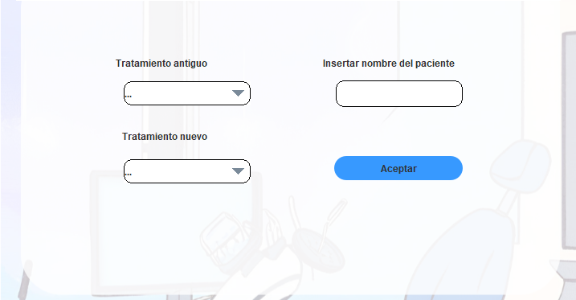

Ayuda: Modificar Odontograma
Los siguientes pasos le guiarán a través del proceso de modificar el
odontograma de un paciente:
- Añadir paciente al que se le rmodifica el odontograma: Desde la pantalla,
añada el paciente al que desea modificar el odontograma utilizando el
campo de texto provisto (DNI/Nombre Completo).
- Aceptar: Después de especificar el paciente,
seleccione el boton "Aceptar".
- Pulsar en el diente: Pulse sobre el diente para aceceder al odontograma y consultarlo o modificarlo.

Si tiene alguna pregunta o necesita ayuda adicional,
no dude en comunicarse con nosotros.